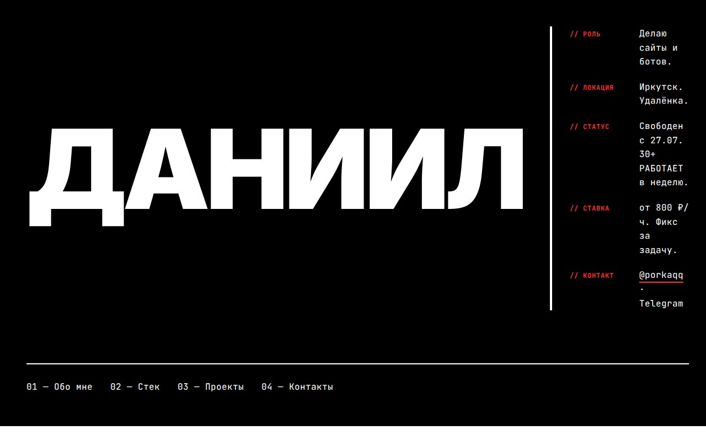
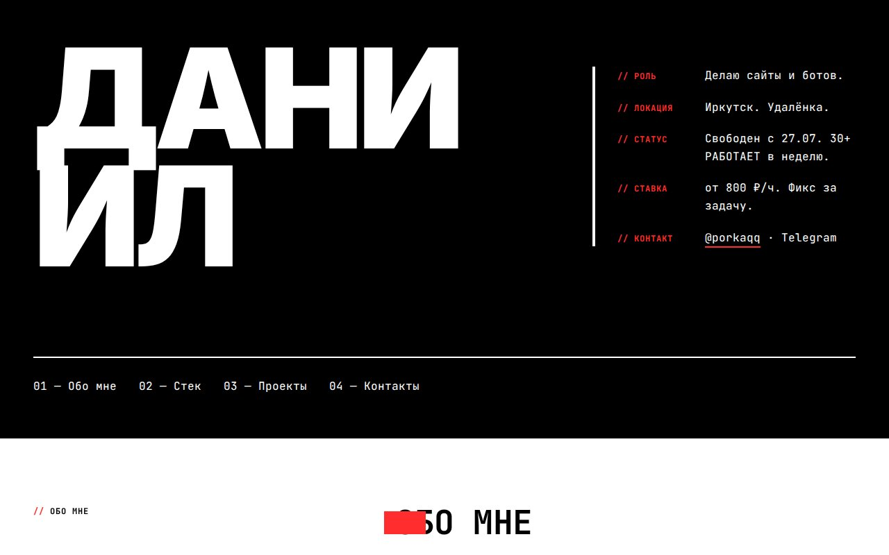

Бетон и манифест
Чёрный фон, белая типографика, красный акцент. «ДАНИИЛ» 200px, рубленый тон, без анимаций — статика как statement. Эстетика Bloomberg Businessweek и брутализма 2010-х.
→ Открыть v1-brutalistТри standalone-страницы одного портфолио. Контент, контакты и проекты одинаковые. Тон, типографика, цвет и анимации — разные. К каждой базовой странице есть animated-вариант: scroll-эффекты, hover-микро-анимации, scroll-typing, scramble, magnetic. Это каталог для выбора финального варианта, не финальный сайт.
Чёрный фон, белая типографика, красный акцент. «ДАНИИЛ» 200px, рубленый тон, без анимаций — статика как statement. Эстетика Bloomberg Businessweek и брутализма 2010-х.
→ Открыть v1-brutalist
Та же палитра и типографика, что в base. Жёсткие шторы clip-path на секциях, translate3d на h1 при скролле. Никакого fade, никакого easing — линейный механический scroll.
→ Открыть v1-brutalist-scroll
Брутализм с анимацией. Scramble «ДАНИИЛ» при загрузке, красный underline вырастает под «РАБОТАЕТ», magnetic-CTA на Telegram-ссылке, char-flip на TELEGRAM/EMAIL/GITHUB. Палитра и типографика сохранены.
→ Открыть v1-brutalist-wow
JetBrains Mono ВЕЗДЕ, prompt `$ daniil@irkutsk:~$`, вывод реальных команд (whoami, ls, cat, tree). Typing в hero через rAF, cursor blink, fade-up через IO. Не Matrix rain — серьёзный dev-tool.
→ Открыть v3-terminal
Все 11 блоков (cat about.txt, skills, ls, tree, uptime, contact, man daniil) печатаются посимвольно при попадании в viewport. Очередь через IntersectionObserver + rAF, мигающий курсор на каждом блоке. Похоже на реальный CLI-сеанс.
→ Открыть v3-terminal-typing
Офф-вайт фон, чёрный текст, moss accent. Geist Sans, split 50/50, минимум воздуха и слов. Subtle fade-up через IO, hover-lift translateY. Фактология, без эмоций.
→ Открыть v4-minimalist
«Даниил» собирается посимвольно (split-chars), CTA магнитится за курсором через rAF, карточки приподнимаются с accent-rail. Pill-stagger на тегах, underline-slide на ссылках. Сохраняет лимит тени ≤0.08 и палитру moss.
→ Открыть v4-minimalist-hover